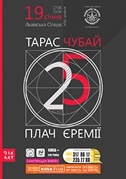
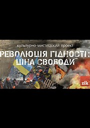

Галичани в Європу автостопом!)
Мрії збуваються і от я нарешті з'їздив в свій перший Євротур по загнивающій Європі, а то до того їздив по встающій з колін Росії і Білорусії, а тепер почалось життя в шоколаді, бо отримав візу на рік!:))
25-річчя гурту «Плач Єремії»
 У 2015 році гурт «Плач Єремії» відзначатиме 25 років творчої діяльності. Музиканти вирішили це робити саме у Львові, у місті, де все починалося. Велике концертне шоу з уже добре відомими піснями відбудеться 19 січня у Львівській Опері. Як повідомив лідер гурту Тарас Чубай, музиканти обіцяють виконати треки, які стали хітами, а також й ті, які грали дуже давно. «Це пісні під які ми закохувались, сумували та сподівались, під які ми дорослішали, шукали й перемагали. Легендарні пісні «Плачу Єремії» за 25 років стали справжнім символами цілих поколінь. Слухаючи їх, ми можемо знову переживати найзворушливіші, найдраматичніші, найпотаємніші моменти життя», - зазначив директор компанії «ДікАрт» Андрій Сидор.
Інтерактивний культурно-мистецький проект «Революція Гідності: ціна свободи»
 Телеканал ZIK cпільно із відомими художниками спеціально до річниці початку Майдану підготували інтерактивний культурно-мистецький проект «Революція Гідності: ціна свободи». Саме через мистецтво організатори експозиції хочуть нагадати українцям найяскравіші моменти революції.
А для тих, хто не був активним учасником подій – це шанс проникнутися духом тих днів.
На експозиції представлені всі атрибути революційного Майдану: шини, барикади, бруківка і «коктейлі Молотова», каски, спалене авто, а на подвір’ї – бочки з полум’ям. У проекті представлені фотографії студентських мітингів, котрі нагадують, як усе починалося...Різдвяний ярмарок
Під час новорічних та різдвяних свят у центрі Львова традиційно працюватиме ярмарок. Ярмарок – епіцентр святкувань із безліччю цікавих заходів та подій: співи, веселощі, солодощі та гаряче вино, мед, вареники, сувеніри та подарунки, колядки та забави, тепла святкова атмосфера. Для львів’ян та гостей міста свої твори репрезентуватимуть майстри лозоплетіння, вишивки, гончарства, різьбярства, національного одягу, художніх виробів зі шкіри, бісеру, ковальської справи. Чудовий новорічний настрій подаватимуть з гарних дерев’яних будиночків, що стали в Європі, а тепер і у Львові, символом Різдва.
Розклад кіносеансів у «Планеті-кіно» IMAX
У кінотеатрі «ПЛАНЕТА КІНО» діє система знижок для студентів, школярів пенсіонерів, інвалідів - з понеділка по п'ятницю, крім святкових, вихідних днів та прем'єрних показів (по пред'явленню студентського, учнівського або пенсійного посвідчення) Вартість квитка зі знижкою на фільми формату плівка і 2D – 25 грн, 3D – 35 грн, ІМАХ – 40 грн. Знижка на ВІП місця не діє. Діти до 6 років проходять у зал безкоштовно без надання окремого місця.